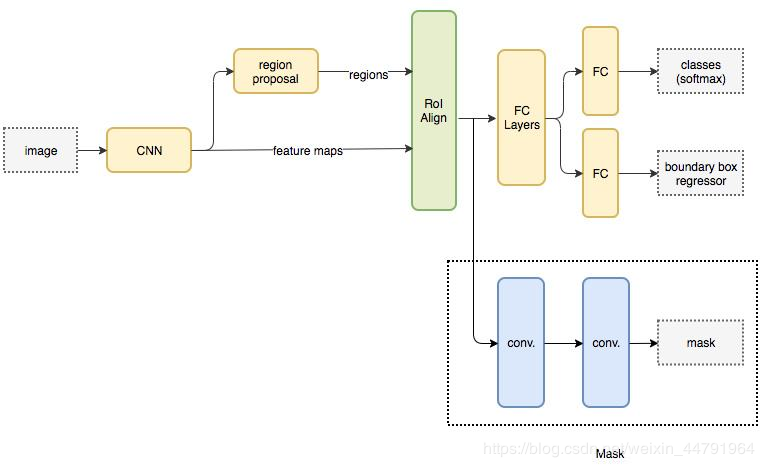
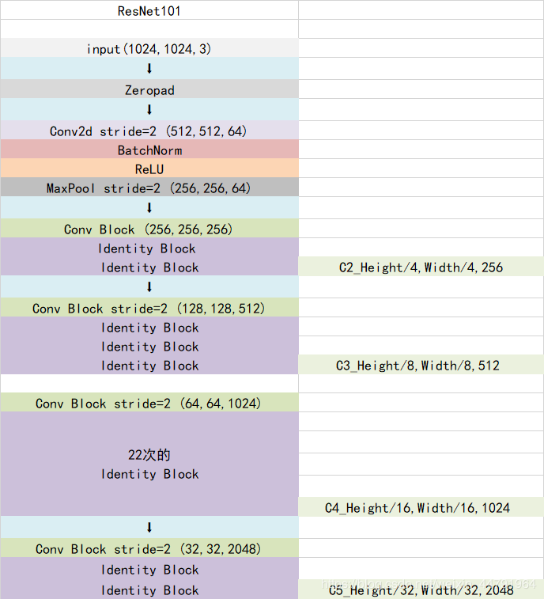
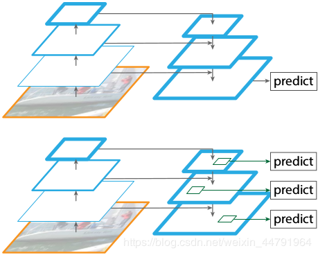
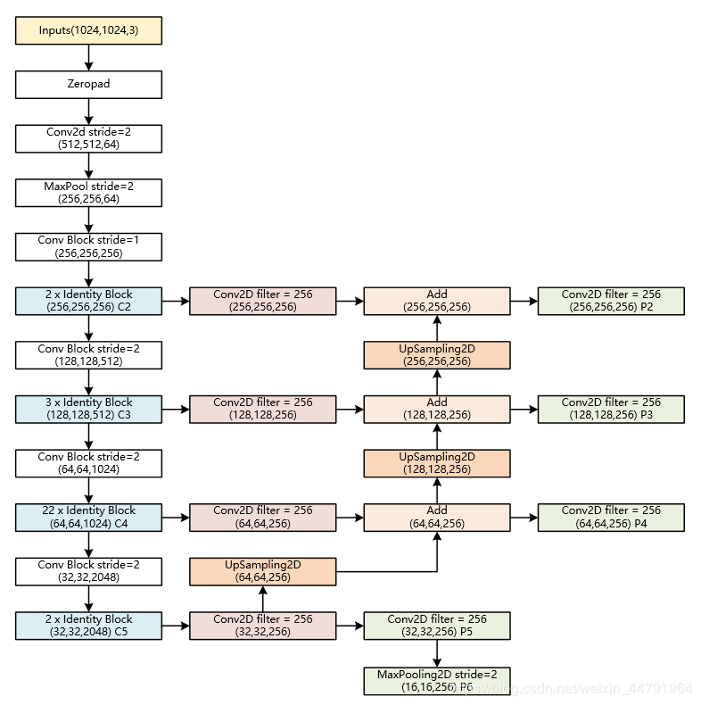
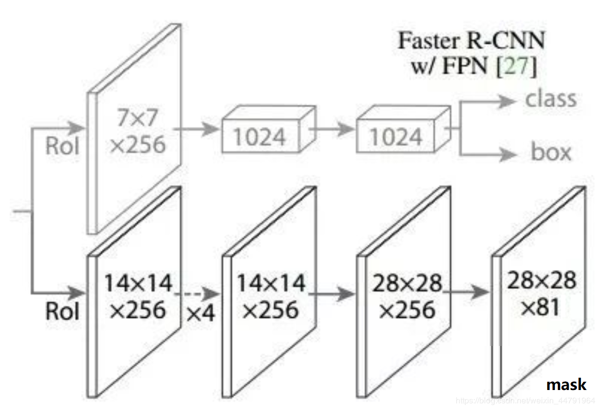

基于Fast RCNN的实例分割算法
CSDN：https://blog.csdn.net/weixin_44791964/article/details/104629135
Mask R-CNN实现思路
一、预测部分
1、主干网络介绍

Mask-RCNN使用Resnet101作为主干特征提取网络，对应着图像中的CNN部分，其对输入进来的图片有尺寸要求，需要可以整除2的6次方。在进行特征提取后，利用长宽压缩了两次、三次、四次、五次的特征层来进行特征金字塔结构的构造。
ResNet101有两个基本的块，分别名为Conv Block和Identity Block，其中Conv Block输入和输出的维度是不一样的，所以不能连续串联，它的作用是改变网络的维度；Identity Block输入维度和输出维度相同，可以串联，用于加深网络的。
Conv Block的结构如下：
Identity Block的结构如下：
这两个都是残差网络结构。
以官方使用的coco数据集输入的shape为例，输入的shape为1024x1024，shape变化如下：

我们取出长宽压缩了两次、三次、四次、五次的结果来进行特征金字塔结构的构造。
2、特征金字塔的构建

特征金字塔FPN的构建是为了实现特征多尺度的融合，在Mask R-CNN当中，我们取出在主干特征提取网络中长宽压缩了两次C2、三次C3、四次C4、五次C5的结果来进行特征金字塔结构的构造。

提取到的P2、P3、P4、P5、P6可以作为RPN网络的有效特征层，利用RPN建议框网络对有效特征层进行下一步的操作，对先验框进行解码获得建议框。
提取到的P2、P3、P4、P5可以作为Classifier和Mask网络的有效特征层，利用Classifier预测框网络对有效特征层进行下一步的操作，对建议框解码获得最终预测框；利用Mask语义分割网络对有效特征层进行下一步的操作，获得每一个预测框内部的语义分割结果。
3、获得proposal建议框
由上一步获得的有效特征层在图像中就是Feature Map，其有两个应用，一个是和ROIAsign结合使用、另一个是进入到Region Proposal Network进行建议框的获取。
在进行建议框获取的时候，我们使用的有效特征层是P2、P3、P4、P5、P6，它们使用同一个RPN建议框网络获取先验框调整参数，还有先验框内部是否包含物体。
在Mask R-cnn中，RPN建议框网络的结构和Faster RCNN中的RPN建议框网络类似。
首先进行一次3x3的通道数为512的卷积。
然后再分别进行一次anchors_per_location x 4的卷积 和一次anchors_per_location x 2的卷积。
anchors_per_location x 4的卷积 用于预测 公用特征层上 每一个网格点上 每一个先验框的变化情况。（为什么说是变化情况呢，这是因为Faster-RCNN的预测结果需要结合先验框获得预测框，预测结果就是先验框的变化情况。）
anchors_per_location x 2的卷积 用于预测 公用特征层上 每一个网格点上 每一个预测框内部是否包含了物体。
当我们输入的图片的shape是1024x1024x3的时候，公用特征层的shape就是256x256x256、128x128x256、64x64x256、32x32x256、16x16x256，相当于把输入进来的图像分割成不同大小的网格，然后每个网格默认存在3（anchors_per_location ）个先验框，这些先验框有不同的大小，在图像上密密麻麻。
anchors_per_location x 4的卷积的结果会对这些先验框进行调整，获得一个新的框。
anchors_per_location x 2的卷积会判断上述获得的新框是否包含物体。
到这里我们可以获得了一些有用的框，这些框会利用anchors_per_location x 2的卷积判断是否存在物体。
到此位置还只是粗略的一个框的获取，也就是一个建议框。然后我们会在建议框里面继续找东西。
4、Proposal建议框的解码
通过第二步我们获得了许多个先验框的预测结果。预测结果包含两部分。
anchors_per_location x 4的卷积 用于预测 有效特征层上 每一个网格点上 每一个先验框的变化情况。
anchors_per_location x 1的卷积 用于预测 有效特征层上 每一个网格点上 每一个预测框内部是否包含了物体。
相当于就是将整个图像分成若干个网格；然后从每个网格中心建立3个先验框，当输入的图像是1024,1024,3的时候，总共先验框数量为196608+49152+12288+3072+768 = 261,888
当输入图像shape不同时，先验框的数量也会发生改变。
5、对Proposal建议框加以利用（Roi Align）
让我们对建议框有一个整体的理解：
事实上建议框就是对图片哪一个区域有物体存在进行初步筛选。
实际上，Mask R-CNN到这里的操作是，通过主干特征提取网络，我们可以获得多个公用特征层，然后建议框会对这些公用特征层进行截取。
其实公用特征层里的每一个点相当于原图片上某个区域内部所有特征的浓缩。
建议框会对其对应的公用特征层进行截取，然后将截取的结果进行resize，在classifier模型里，截取后的内容会resize到7x7x256的大小。在mask模型里，截取后的内容会resize到14x14x256的大小。

在利用建议框对公用特征层进行截取的时候要注意，要找到建议框属于那个特征层，这个要从建议框的大小进行判断。
在classifier模型里，其会利用一次通道数为1024的7x7的卷积和一次通道数为1024的1x1的卷积对ROIAlign获得的7x7x256的区域进行卷积，两次通道数为1024卷积用于模拟两次1024的全连接，然后再分别全连接到num_classes和num_classes * 4上，分别代表这个建议框内的物体，以及这个建议框的调整参数。
在mask模型里，其首先会对resize后的局部特征层进行四次3x3的256通道的卷积，再进行一次反卷积，再进行一次通道数为num_classes的卷积，最终结果代表每一个像素点分的类。最终的shape为28x28xnum_classes，代表每个像素点的类别。
6、预测框的解码
在第四部分获得的建议框也代表了图片上的某一些区域，它在后面的在classifier模型里也起到了先验框的作用。
也就是classifier模型的预测结果，代表了建议框内部物体的种类和调整参数。
建议框调整后的结果，也就是最终的预测结果，这个预测结果就可以在图片上进行绘制了。
预测框的解码过程包括了如下几个步骤：
1、取出不属于背景，并且得分大于config.DETECTION_MIN_CONFIDENCE的建议框。
2、然后利用建议框和classifier模型的预测结果进行解码，获得最终预测框的位置。
3、利用得分和最终预测框的位置进行非极大抑制，防止重复检测。
7、mask语义分割信息的获取
在第六步中，我们获得了最终的预测框，这个预测框相比于之前获得的建议框更加准确，因此我们把这个预测框作为mask模型的区域截取部分，利用这个预测框对mask模型中用到的公用特征层进行截取。
截取后，利用mask模型再对像素点进行分类，获得语义分割结果。